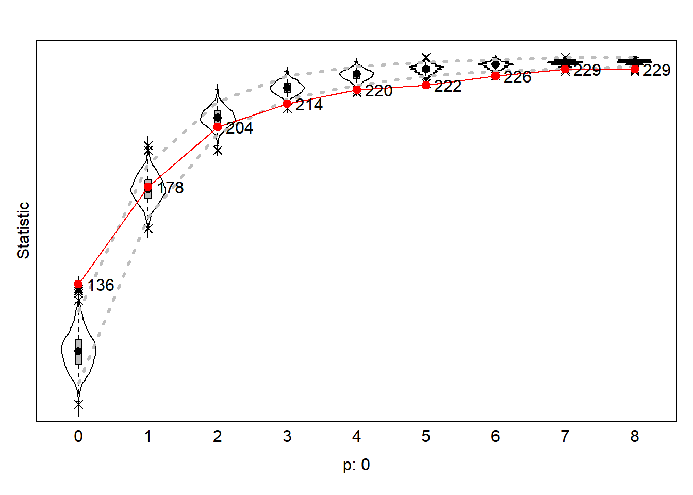
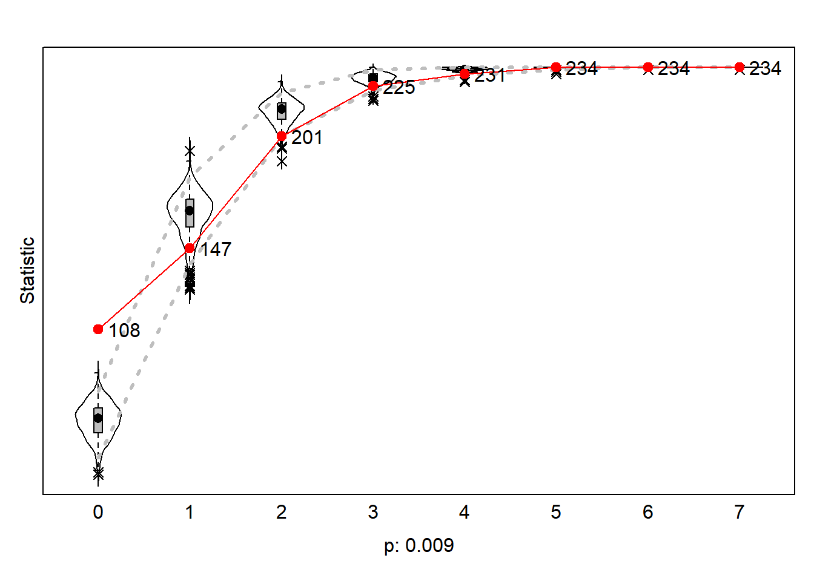
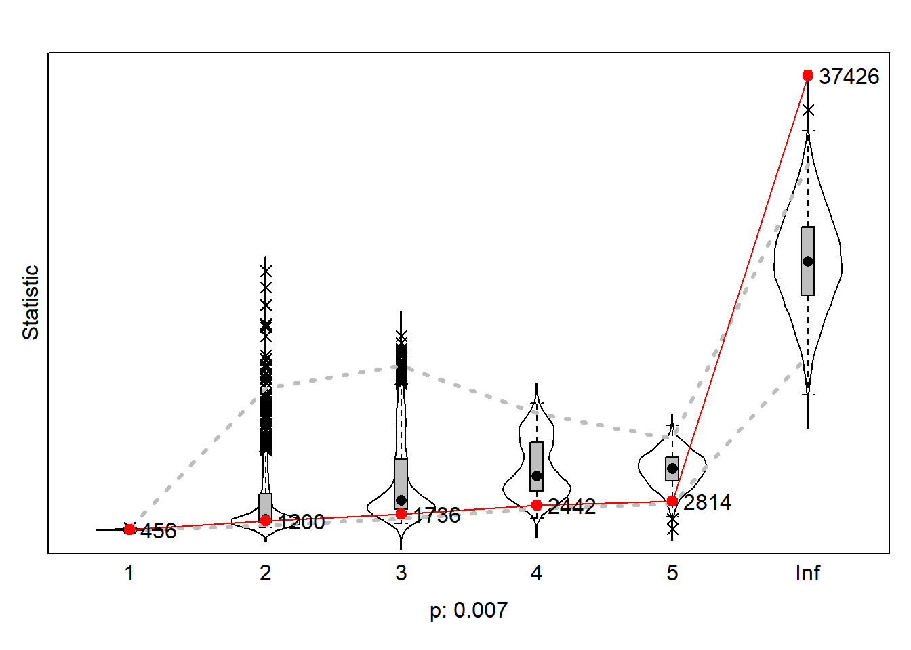

Step 1: define
data
df_nets <- fulldata$nets
length(df_nets)
#> [1] 109512
dim(df_nets)[1]
#> [1] 2
wave1 <- df_nets[1, , ]
wave2 <- df_nets[2, , ]
# put diagonal to zero
diag(wave1) <- 0
diag(wave2) <- 0
# binary ties
wave1[wave1 > 1] <- 1
wave2[wave2 > 2] <- 1
# put networks in array --> right format for Rsiena
net_soc_array <- array(data = c(wave1, wave2), dim = c(dim(wave1), 2))
dim(net_soc_array)
#> [1] 234 234 2
net <- sienaDependent(net_soc_array)
career_age <- as.numeric(df_ego$career_age)
career_age <- coCovar(career_age)
h_index_cat <- as.numeric(df_ego$h_index_cat)
h_index_cat <- coCovar(h_index_cat)
data_siena <- sienaDataCreate(net, career_age, h_index_cat)
step 2: create effects
structure
myeff <- getEffects(data_siena)
effectsDocumentation((myeff))
#> Effects documentation written to file (myeff).html .
step 3: get initial
description
print01Report(data_siena, modelname = "./results/first_model")
step 4: specify
model
myeff <- getEffects(data_siena)
# myeff <- includeEffects(myeff, isolateNet, inPop, outAct, inAct, transTrip)
# myeff <- includeEffects(myeff, altX, interaction1 = 'h_index_cat') myeff <- includeEffects(myeff,
# egoX, altX, interaction1 = 'career_age')
myeff <- includeEffects(myeff, inPop, recip)
#> effectName include fix test initialValue parm
#> 1 reciprocity TRUE FALSE FALSE 0 0
#> 2 indegree - popularity TRUE FALSE FALSE 0 0
step 5: estimate
model
myAlgorithm <- sienaAlgorithmCreate(projname = "first_model")
#> If you use this algorithm object, siena07 will create/use an output file first_model.txt .
ansM1 <- siena07(myAlgorithm, data = data_siena, effects = myeff, returnDeps = TRUE)
ansM1
#> Estimates, standard errors and convergence t-ratios
#>
#> Estimate Standard Convergence
#> Error t-ratio
#>
#> Rate parameters:
#> 0 Rate parameter 3.2951 ( 0.6153 )
#>
#> Other parameters:
#> 1. eval outdegree (density) -3.6974 ( 0.1612 ) 0.4357
#> 2. eval reciprocity 2.9292 ( 0.2447 ) -0.1954
#> 3. eval indegree - popularity 0.1841 ( 0.0275 ) 0.4283
#>
#> Overall maximum convergence ratio: 0.4708
#>
#>
#> Total of 2295 iteration steps.
# see here: ?'sienaGOF-auxiliary'
# The geodesic distribution is not available from within RSiena, and therefore is copied from the
# help page of sienaGOF-auxiliary:
# GeodesicDistribution calculates the distribution of non-directed geodesic distances; see
# ?sna::geodist The default for \code{levls} reflects the usual phenomenon that geodesic distances
# larger than 5 do not differ appreciably with respect to interpretation. Note that the levels of
# the result are named; these names are used in the \code{plot} method.
GeodesicDistribution <- function(i, data, sims, period, groupName, varName, levls = c(1:5, Inf), cumulative = TRUE,
...) {
x <- networkExtraction(i, data, sims, period, groupName, varName)
require(sna)
a <- sna::geodist(symmetrize(x))$gdist
if (cumulative) {
gdi <- sapply(levls, function(i) {
sum(a <= i)
})
} else {
gdi <- sapply(levls, function(i) {
sum(a == i)
})
}
names(gdi) <- as.character(levls)
gdi
}
# The following function is taken from the help page for sienaTest
testall <- function(ans) {
for (i in which(ans$test)) {
sct <- score.Test(ans, i)
cat(ans$requestedEffects$effectName[i], "\n")
print(sct)
}
invisible(score.Test(ans))
}
gofi0 <- sienaGOF(ansM1, IndegreeDistribution, verbose = FALSE, join = TRUE, varName = "net")
gofo0 <- sienaGOF(ansM1, OutdegreeDistribution, verbose = FALSE, join = TRUE, levls = c(0:10, 15, 20),
varName = "net")
gof0.gd <- sienaGOF(ansM1, GeodesicDistribution, cumulative = FALSE, verbose = FALSE, join = TRUE, varName = "net")
plot(gofi0, main = "")

plot(gofo0, main = "")
#> Note: some statistics are not plotted because their variance is 0.
#> This holds for the statistics: 8 9 10 15 20.

plot(gof0.gd, main = "")

LS0tDQp0aXRsZTogIldlZWsgNiAtIG5ldyBtb2RlbHMiDQphdXRob3I6ICJLb2VuIEx1Y2FzIg0KZGF0ZTogIjIwMjQtMTAtMDkiDQpvdXRwdXQ6IGh0bWxfZG9jdW1lbnQNCi0tLQ0KDQpgYGB7PWh0bWx9DQo8c3R5bGU+DQpib2R5IHsNCnRleHQtYWxpZ246IGp1c3RpZnl9DQo8L3N0eWxlPg0KYGBgDQpgYGB7ciwgZ2xvYmFsc2V0dGluZ3MsIGVjaG89RkFMU0UsIHdhcm5pbmc9RkFMU0UsIHJlc3VsdHM9J2hpZGUnfQ0KDQpsaWJyYXJ5KGtuaXRyKQ0KbGlicmFyeShmb3JtYXRSKQ0KDQprbml0cjo6b3B0c19jaHVuayRzZXQoZWNobyA9IFRSVUUpDQpvcHRzX2NodW5rJHNldCh0aWR5Lm9wdHM9bGlzdCh3aWR0aC5jdXRvZmY9MTAwKSx0aWR5PVRSVUUsIHdhcm5pbmcgPSBGQUxTRSwgbWVzc2FnZSA9IEZBTFNFLGNvbW1lbnQgPSAiIz4iLCBjYWNoZT1UUlVFLCBjbGFzcy5zb3VyY2U9YygidGVzdCIpLCBjbGFzcy5vdXRwdXQ9YygidGVzdDIiKSkNCm9wdGlvbnMod2lkdGggPSAxMDApDQpyZ2w6OnNldHVwS25pdHIoKQ0KDQoNCmNvbG9yaXplIDwtIGZ1bmN0aW9uKHgsIGNvbG9yKSB7c3ByaW50ZigiPHNwYW4gc3R5bGU9J2NvbG9yOiAlczsnPiVzPC9zcGFuPiIsIGNvbG9yLCB4KSB9DQpgYGANCg0KYGBge3Iga2xpcHB5LCBlY2hvPUZBTFNFLCBpbmNsdWRlPVRSVUV9DQprbGlwcHk6OmtsaXBweShwb3NpdGlvbiA9IGMoJ3RvcCcsICdyaWdodCcpKQ0KYGBgDQoNCmBgYHtyIGNsZWFuIHdvcmtzcGFjZSwgaW5jbHVkZSA9IEZBTFNFfQ0KDQpybShsaXN0ID0gbHMoKSkNCg0KYGBgDQoNCmBgYHtyIGxvYWQgZnVuY3Rpb25zLCBpbmNsdWRlPUZBTFNFfQ0Kcm0obGlzdCA9IGxzKCkpDQoNCg0KZnBhY2thZ2UuY2hlY2sgPC0gZnVuY3Rpb24ocGFja2FnZXMpIHsNCiAgICBsYXBwbHkocGFja2FnZXMsIEZVTiA9IGZ1bmN0aW9uKHgpIHsNCiAgICAgICAgaWYgKCFyZXF1aXJlKHgsIGNoYXJhY3Rlci5vbmx5ID0gVFJVRSkpIHsNCiAgICAgICAgICAgIGluc3RhbGwucGFja2FnZXMoeCwgZGVwZW5kZW5jaWVzID0gVFJVRSkNCiAgICAgICAgICAgIGxpYnJhcnkoeCwgY2hhcmFjdGVyLm9ubHkgPSBUUlVFKQ0KICAgICAgICB9DQogICAgfSkNCn0NCg0KZnNhdmUgPC0gZnVuY3Rpb24oeCwgZmlsZSA9IE5VTEwsIGxvY2F0aW9uID0gIi4vZGF0YS9wcm9jZXNzZWQvIikgew0KICAgIGlmZWxzZSghZGlyLmV4aXN0cygiZGF0YSIpLCBkaXIuY3JlYXRlKCJkYXRhIiksIEZBTFNFKQ0KICAgIGlmZWxzZSghZGlyLmV4aXN0cygiZGF0YS9wcm9jZXNzZWQiKSwgZGlyLmNyZWF0ZSgiZGF0YS9wcm9jZXNzZWQiKSwgRkFMU0UpDQogICAgaWYgKGlzLm51bGwoZmlsZSkpDQogICAgICAgIGZpbGUgPSBkZXBhcnNlKHN1YnN0aXR1dGUoeCkpDQogICAgZGF0ZW5hbWUgPC0gc3Vic3RyKGdzdWIoIls6LV0iLCAiIiwgU3lzLnRpbWUoKSksIDEsIDgpDQogICAgdG90YWxuYW1lIDwtIHBhc3RlKGxvY2F0aW9uLCBmaWxlLCAiXyIsIGRhdGVuYW1lLCAiLnJkYSIsIHNlcCA9ICIiKQ0KICAgIHNhdmUoeCwgZmlsZSA9IHRvdGFsbmFtZSkgICNuZWVkIHRvIGZpeCBpZiBmaWxlIGlzIHJlbG9hZGVkIGFzIGlucHV0IG5hbWUsIG5vdCBhcyB4LiANCn0NCg0KZmxvYWQgPC0gZnVuY3Rpb24oZmlsZW5hbWUpIHsNCiAgICBsb2FkKGZpbGVuYW1lKQ0KICAgIGdldChscygpW2xzKCkgIT0gImZpbGVuYW1lIl0pDQp9DQoNCmZzaG93ZGYgPC0gZnVuY3Rpb24oeCwgLi4uKSB7DQogICAga25pdHI6OmthYmxlKHgsIGRpZ2l0cyA9IDIsICJodG1sIiwgLi4uKSAlPiUNCiAgICAgICAga2FibGVFeHRyYTo6a2FibGVfc3R5bGluZyhib290c3RyYXBfb3B0aW9ucyA9IGMoInN0cmlwZWQiLCAiaG92ZXIiKSkgJT4lDQogICAgICAgIGthYmxlRXh0cmE6OnNjcm9sbF9ib3god2lkdGggPSAiMTAwJSIsIGhlaWdodCA9ICIzMDBweCIpDQp9DQoNCg0KYGBgDQoNCg0KYGBge3IgbG9hZCBwYWNrYWdlcywgaW5jbHVkZT1GQUxTRX0NCg0KcGFja2FnZXMgPC0gYygidGlkeXZlcnNlIiwgDQogICAgICAgICAgICAgICJzY2hvbGFyIiwgDQogICAgICAgICAgICAgICJSU2llbmEiLCANCiAgICAgICAgICAgICAgIlJzaWVuYVR3b1N0ZXAiLCANCiAgICAgICAgICAgICAgImlncmFwaCIpDQoNCmZwYWNrYWdlLmNoZWNrKHBhY2thZ2VzKQ0KYGBgDQoNCg0KYGBge3IgbG9hZCBkYXRhLCBpbmNsdWRlPUZBTFNFfQ0KDQpmdWxsZGF0YSA8LSBmbG9hZCgiLi9EYXRhL2Z1bGxfZGF0YS5SZGF0YSIpDQoNCmRmX2VnbyA8LSBmbG9hZCgiLi9EYXRhL2RmX2Vnby5SZGF0YSIpDQogIA0KZGZfd29ya3MgPC0gZmxvYWQoIi4vRGF0YS9kZl93b3Jrcy5SZGF0YSIpDQoNCmBgYA0KDQoNCiMgU3RlcCAxOiBkZWZpbmUgZGF0YQ0KYGBge3IgY3JlYXRlIHJpZ2h0IHN0cnVjdHVyZSB9DQoNCmRmX25ldHMgPC0gZnVsbGRhdGEkbmV0cw0KDQpsZW5ndGgoZGZfbmV0cykNCmRpbShkZl9uZXRzKVsxXQ0KDQp3YXZlMSA8LSBkZl9uZXRzWzEsLF0NCndhdmUyIDwtIGRmX25ldHNbMiwsXQ0KDQojIHB1dCBkaWFnb25hbCB0byB6ZXJvDQpkaWFnKHdhdmUxKSA8LSAwDQpkaWFnKHdhdmUyKSA8LSAwDQoNCiMgYmluYXJ5IHRpZXMNCndhdmUxW3dhdmUxID4gMV0gPC0gMQ0Kd2F2ZTJbd2F2ZTIgPiAyXSA8LSAxDQoNCiMgcHV0IG5ldHdvcmtzIGluIGFycmF5IC0tPiByaWdodCBmb3JtYXQgZm9yIFJzaWVuYQ0KbmV0X3NvY19hcnJheSA8LSBhcnJheShkYXRhID0gYyh3YXZlMSwgd2F2ZTIpLCBkaW0gPSBjKGRpbSh3YXZlMSksIDIpKQ0KZGltKG5ldF9zb2NfYXJyYXkpDQoNCmBgYA0KYGBge3IgZGVwZW5kZW50IHZhcmlhYmxlfQ0KDQpuZXQgPC0gc2llbmFEZXBlbmRlbnQobmV0X3NvY19hcnJheSkNCg0KYGBgDQoNCg0KYGBge3IgaW5kZXBlbmRlbnQgdmFyaWFibGV9DQoNCmNhcmVlcl9hZ2UgPC0gYXMubnVtZXJpYyhkZl9lZ28kY2FyZWVyX2FnZSkNCmNhcmVlcl9hZ2UgPC0gY29Db3ZhcihjYXJlZXJfYWdlKQ0KDQoNCmhfaW5kZXhfY2F0IDwtIGFzLm51bWVyaWMoZGZfZWdvJGhfaW5kZXhfY2F0KQ0KaF9pbmRleF9jYXQgPC0gY29Db3ZhcihoX2luZGV4X2NhdCkNCg0KYGBgDQoNCmBgYHtyIGNyZWF0ZSBzaWVuYSBkYXRhIG9iamVjdH0NCg0KZGF0YV9zaWVuYSA8LSBzaWVuYURhdGFDcmVhdGUobmV0LCBjYXJlZXJfYWdlLCBoX2luZGV4X2NhdCkNCg0KYGBgDQoNCg0KIyBzdGVwIDI6IGNyZWF0ZSBlZmZlY3RzIHN0cnVjdHVyZQ0KYGBge3IgY3JlYXRlIGVmZmVjdHMgc3RydWN0dXJlfQ0KDQpteWVmZiA8LSBnZXRFZmZlY3RzKGRhdGFfc2llbmEpDQplZmZlY3RzRG9jdW1lbnRhdGlvbigobXllZmYpKQ0KDQpgYGANCg0KIyBzdGVwIDM6IGdldCBpbml0aWFsIGRlc2NyaXB0aW9uDQpgYGB7ciBpbml0aWFsIGRlc2NyaXB0aW9ufQ0KDQpwcmludDAxUmVwb3J0KGRhdGFfc2llbmEsIG1vZGVsbmFtZSA9ICIuL3Jlc3VsdHMvZmlyc3RfbW9kZWwiKQ0KDQpgYGANCg0KIyBzdGVwIDQ6IHNwZWNpZnkgbW9kZWwNCmBgYHtyIGluY2x1ZGUgZWZmZWN0c30NCg0KbXllZmYgPC0gZ2V0RWZmZWN0cyhkYXRhX3NpZW5hKQ0KDQojIG15ZWZmIDwtIGluY2x1ZGVFZmZlY3RzKG15ZWZmLCBpc29sYXRlTmV0LCBpblBvcCwgb3V0QWN0LCBpbkFjdCwgdHJhbnNUcmlwKQ0KDQojIG15ZWZmIDwtIGluY2x1ZGVFZmZlY3RzKG15ZWZmLCBhbHRYLCBpbnRlcmFjdGlvbjEgPSAiaF9pbmRleF9jYXQiKQ0KIyBteWVmZiA8LSBpbmNsdWRlRWZmZWN0cyhteWVmZiwgZWdvWCwgYWx0WCwgaW50ZXJhY3Rpb24xID0gImNhcmVlcl9hZ2UiKQ0KDQoNCm15ZWZmIDwtIGluY2x1ZGVFZmZlY3RzKG15ZWZmLCBpblBvcCwgcmVjaXApDQoNCmBgYA0KDQojIHN0ZXAgNTogZXN0aW1hdGUgbW9kZWwNCmBgYHtyIGVzdGltYXRlIG1vZGVsfQ0KDQpteUFsZ29yaXRobSA8LSBzaWVuYUFsZ29yaXRobUNyZWF0ZShwcm9qbmFtZSA9ICJmaXJzdF9tb2RlbCIpDQphbnNNMSA8LSBzaWVuYTA3KG15QWxnb3JpdGhtLCBkYXRhID0gZGF0YV9zaWVuYSwgZWZmZWN0cyA9IG15ZWZmLCByZXR1cm5EZXBzID0gVFJVRSkNCg0KYW5zTTENCg0KYGBgDQoNCmBgYHtyIGZ1bmN0aW9ucyBzaWVuYUdPRn0NCiMgc2VlIGhlcmU6ID8nc2llbmFHT0YtYXV4aWxpYXJ5Jw0KDQojIFRoZSBnZW9kZXNpYyBkaXN0cmlidXRpb24gaXMgbm90IGF2YWlsYWJsZSBmcm9tIHdpdGhpbiBSU2llbmEsIGFuZCB0aGVyZWZvcmUgaXMgY29waWVkIGZyb20gdGhlDQojIGhlbHAgcGFnZSBvZiBzaWVuYUdPRi1hdXhpbGlhcnk6DQoNCiMgR2VvZGVzaWNEaXN0cmlidXRpb24gY2FsY3VsYXRlcyB0aGUgZGlzdHJpYnV0aW9uIG9mIG5vbi1kaXJlY3RlZCBnZW9kZXNpYyBkaXN0YW5jZXM7IHNlZQ0KIyA/c25hOjpnZW9kaXN0IFRoZSBkZWZhdWx0IGZvciBcY29kZXtsZXZsc30gcmVmbGVjdHMgdGhlIHVzdWFsIHBoZW5vbWVub24gdGhhdCBnZW9kZXNpYyBkaXN0YW5jZXMNCiMgbGFyZ2VyIHRoYW4gNSBkbyBub3QgZGlmZmVyIGFwcHJlY2lhYmx5IHdpdGggcmVzcGVjdCB0byBpbnRlcnByZXRhdGlvbi4gIE5vdGUgdGhhdCB0aGUgbGV2ZWxzIG9mDQojIHRoZSByZXN1bHQgYXJlIG5hbWVkOyB0aGVzZSBuYW1lcyBhcmUgdXNlZCBpbiB0aGUgXGNvZGV7cGxvdH0gbWV0aG9kLg0KR2VvZGVzaWNEaXN0cmlidXRpb24gPC0gZnVuY3Rpb24oaSwgZGF0YSwgc2ltcywgcGVyaW9kLCBncm91cE5hbWUsIHZhck5hbWUsIGxldmxzID0gYygxOjUsIEluZiksIGN1bXVsYXRpdmUgPSBUUlVFLA0KICAgIC4uLikgew0KICAgIHggPC0gbmV0d29ya0V4dHJhY3Rpb24oaSwgZGF0YSwgc2ltcywgcGVyaW9kLCBncm91cE5hbWUsIHZhck5hbWUpDQogICAgcmVxdWlyZShzbmEpDQogICAgYSA8LSBzbmE6Omdlb2Rpc3Qoc3ltbWV0cml6ZSh4KSkkZ2Rpc3QNCiAgICBpZiAoY3VtdWxhdGl2ZSkgew0KICAgICAgICBnZGkgPC0gc2FwcGx5KGxldmxzLCBmdW5jdGlvbihpKSB7DQogICAgICAgICAgICBzdW0oYSA8PSBpKQ0KICAgICAgICB9KQ0KICAgIH0gZWxzZSB7DQogICAgICAgIGdkaSA8LSBzYXBwbHkobGV2bHMsIGZ1bmN0aW9uKGkpIHsNCiAgICAgICAgICAgIHN1bShhID09IGkpDQogICAgICAgIH0pDQogICAgfQ0KICAgIG5hbWVzKGdkaSkgPC0gYXMuY2hhcmFjdGVyKGxldmxzKQ0KICAgIGdkaQ0KfQ0KDQojIFRoZSBmb2xsb3dpbmcgZnVuY3Rpb24gaXMgdGFrZW4gZnJvbSB0aGUgaGVscCBwYWdlIGZvciBzaWVuYVRlc3QNCg0KdGVzdGFsbCA8LSBmdW5jdGlvbihhbnMpIHsNCiAgICBmb3IgKGkgaW4gd2hpY2goYW5zJHRlc3QpKSB7DQogICAgICAgIHNjdCA8LSBzY29yZS5UZXN0KGFucywgaSkNCiAgICAgICAgY2F0KGFucyRyZXF1ZXN0ZWRFZmZlY3RzJGVmZmVjdE5hbWVbaV0sICJcbiIpDQogICAgICAgIHByaW50KHNjdCkNCiAgICB9DQogICAgaW52aXNpYmxlKHNjb3JlLlRlc3QoYW5zKSkNCn0NCmBgYA0KDQoNCmBgYHtyIHRlc3QgR09GfQ0KDQpnb2ZpMCA8LSBzaWVuYUdPRihhbnNNMSwgSW5kZWdyZWVEaXN0cmlidXRpb24sIHZlcmJvc2UgPSBGQUxTRSwgam9pbiA9IFRSVUUsIHZhck5hbWUgPSAibmV0IikNCmdvZm8wIDwtIHNpZW5hR09GKGFuc00xLCBPdXRkZWdyZWVEaXN0cmlidXRpb24sIHZlcmJvc2UgPSBGQUxTRSwgam9pbiA9IFRSVUUsIGxldmxzID0gYygwOjEwLCAxNSwgMjApLA0KICAgIHZhck5hbWUgPSAibmV0IikNCmdvZjAuZ2QgPC0gc2llbmFHT0YoYW5zTTEsIEdlb2Rlc2ljRGlzdHJpYnV0aW9uLCBjdW11bGF0aXZlID0gRkFMU0UsIHZlcmJvc2UgPSBGQUxTRSwgam9pbiA9IFRSVUUsIHZhck5hbWUgPSAibmV0IikNCg0KDQpgYGANCg0KDQpgYGB7cn0NCg0KcGxvdChnb2ZpMCwgbWFpbiA9ICIiKQ0KYGBgDQoNCg0KYGBge3J9DQpwbG90KGdvZm8wLCBtYWluID0gIiIpDQpgYGANCg0KYGBge3J9DQpwbG90KGdvZjAuZ2QsIG1haW4gPSAiIikNCg0KYGBgDQoNCg==